# Created:
# 2026-06-03
#
# Inputs:
# - data/AB01/metadata/WC24_metadata_clean.rds: AB01 sample metadata
# - data/AB01/raw counts/WC24_filt_raw_counts.rds: AB01 raw count matrix
# - data_DSHC1/ZRN01/metadata/ZRN01_metadata.rds: ZRN01 sample metadata
# - data_DSHC1/ZRN01/counts/ZRN01_vst.rds: ZRN01 VST matrix
#
# Outputs:
# - docs/AB01_interval_maturation_score.html: rendered standalone HTML report
#
# Purpose:
# Test D21-anchored PCA maturation scoring in AB01 and show complementary PCA
# views using D21 samples at D6, D10, and D17.
#
# Notes:
# VST is computed exactly once with DESeq2::vst(blind = FALSE) using the
# genotype_timepoint condition after CPM-based expression filtering. The source
# metadata uses D21 and T21 labels; figures display those groups as Di21 and
# Tri21 for readability.
knitr::opts_chunk$set(
echo = TRUE,
warning = FALSE,
message = TRUE,
fig.align = 'center',
dpi = 600)
project_root <- if (base::basename(base::getwd()) == 'scripts') {
base::normalizePath('..')
} else {
base::getwd()
}
knitr::opts_knit$set(root.dir = project_root)
required_packages <- base::c(
'DESeq2',
'SummarizedExperiment',
'ggplot2',
'grid')
missing_packages <- required_packages[
!base::vapply(
required_packages,
base::requireNamespace,
base::logical(1),
quietly = TRUE)
]
if (base::length(missing_packages) > 0L) {
base::stop(
'missing required packages: ',
base::paste(missing_packages, collapse = ', '))
}
plot_font_family <- 'Arial'
theme_ab01 <- function(base_size = 10) {
ggplot2::theme_classic(
base_size = base_size,
base_family = plot_font_family) +
ggplot2::theme(
text = ggplot2::element_text(color = 'black', family = plot_font_family),
axis.text = ggplot2::element_text(color = 'black', family = plot_font_family),
axis.title = ggplot2::element_text(color = 'black', family = plot_font_family),
axis.line = ggplot2::element_line(color = 'black', linewidth = 0.3),
axis.ticks = ggplot2::element_line(color = 'black', linewidth = 0.3),
panel.grid.major.y = ggplot2::element_line(color = 'grey92', linewidth = 0.2),
panel.grid.major.x = ggplot2::element_blank(),
panel.grid.minor = ggplot2::element_blank(),
strip.background = ggplot2::element_blank(),
strip.text = ggplot2::element_text(
color = 'black',
face = 'bold',
family = plot_font_family),
legend.title = ggplot2::element_blank(),
legend.text = ggplot2::element_text(color = 'black', family = plot_font_family))
}1 Overview
This report evaluates AB01 maturation using D21 samples as the reference trajectory. It adds two D21-only PCA views before scoring:
- one PCA trained on the top 1000 most variable genes across D21 D6, D10, and D17 samples together;
- one PCA trained on the union of the top 1000 D21-variable genes from the D6-D10 and D10-D17 adjacent intervals.
The score plots use the first three PCs from each interval-specific PCA. For D6-D10, the D21 D6 centroid is anchored at 0 and the D21 D10 centroid is anchored at 1. For D10-D17, the D21 D10 centroid is anchored at 1 and the D21 D17 centroid is anchored at 2. T21 samples are projected into the same fixed D21-trained PCA space and scored relative to those D21 anchors.
2 Load AB01 Data
The metadata and count matrix are loaded directly from the declared AB01 inputs. The stored count columns are reordered to metadata order before any expression filtering or VST calculation.
metadata <- base::readRDS('data/AB01/metadata/WC24_metadata_clean.rds')
counts <- base::readRDS('data/AB01/raw counts/WC24_filt_raw_counts.rds')
base::stopifnot(!base::anyDuplicated(metadata$sample_id))
base::stopifnot(base::all(metadata$sample_id %in% base::colnames(counts)))
counts <- counts[, metadata$sample_id, drop = FALSE]
base::stopifnot(base::identical(
base::as.character(metadata$sample_id),
base::colnames(counts)))
metadata$timepoint_numeric <- base::as.numeric(base::as.character(metadata$timepoint))
timepoint_levels <- base::paste0(
'D',
base::sort(base::unique(metadata$timepoint_numeric)))
metadata$timepoint_label <- base::factor(
base::paste0('D', metadata$timepoint_numeric),
levels = timepoint_levels)
metadata$genotype <- base::factor(metadata$genotype, levels = base::c('D21', 'T21'))
metadata$genotype_display <- base::factor(
base::as.character(metadata$genotype),
levels = base::c('D21', 'T21'),
labels = base::c('Di21', 'Tri21'))
metadata$genotype_timepoint <- base::factor(
metadata$genotype_timepoint,
levels = base::unique(metadata$genotype_timepoint[
base::order(metadata$timepoint_numeric, metadata$genotype)
]))
base::rownames(metadata) <- metadata$sample_id
input_summary <- base::data.frame(
samples = base::nrow(metadata),
genotypes = base::paste(base::levels(metadata$genotype_display), collapse = ', '),
timepoints = base::paste(
base::sort(base::unique(metadata$timepoint_numeric)),
collapse = ', '),
stringsAsFactors = FALSE)
input_summary## samples genotypes timepoints
## 1 18 Di21, Tri21 6, 10, 173 Preprocess Counts and Compute VST Once
The CPM filter removes genes with minimal evidence of expression before VST. This is intentionally done once so every PCA and score uses the same transformed expression matrix.
# Critical expression filter: retain genes with CPM >= 1 in at least 3 samples.
library_sizes <- base::colSums(counts)
cpm_matrix <- base::sweep(counts, 2, library_sizes, FUN = '/') * 1e6
keep_genes <- base::rowSums(cpm_matrix >= 1) >= 3
filtered_counts <- counts[keep_genes, , drop = FALSE]
preprocessing_summary <- base::data.frame(
retained_genes_after_cpm_filter = base::nrow(filtered_counts),
cpm_cutoff = 1,
minimum_samples = 3,
stringsAsFactors = FALSE)
preprocessing_summary## retained_genes_after_cpm_filter cpm_cutoff minimum_samples
## 1 13826 1 3dds <- DESeq2::DESeqDataSetFromMatrix(
countData = filtered_counts,
colData = metadata,
design = ~genotype_timepoint)## converting counts to integer mode4 Define PCA and Scoring Helpers
These helpers keep gene selection, PCA projection, variance labeling, and interval scoring explicit. PCA is centered but not scaled, so genes with larger VST variation contribute more strongly after the D21-only feature-selection step.
# Critical PCA parameter: all requested PCA gene sets use the top 1000 genes.
pca_gene_count = 1000L
# Critical scoring parameter: maturation scores use PC1, PC2, and PC3.
n_scoring_pcs = 3L
# Sensitivity parameter: repeat scoring every 100 genes through the full filtered VST gene set.
sensitivity_gene_counts <- base::unique(base::c(
base::seq(100L, base::nrow(vst_matrix), by = 100L),
base::nrow(vst_matrix)))
sensitivity_x_breaks <- base::seq(500L, base::max(sensitivity_gene_counts), by = 500L)
interval_specs <- base::data.frame(
interval = base::c('D6-D10', 'D10-D17'),
start_timepoint = base::c(6, 10),
end_timepoint = base::c(10, 17),
score_start = base::c(0, 1),
score_end = base::c(1, 2),
stringsAsFactors = FALSE)
interval_specs$interval <- base::factor(
interval_specs$interval,
levels = base::c('D6-D10', 'D10-D17'))
genotype_colors <- base::c(Di21 = '#2563EB', Tri21 = '#DC2626')
timepoint_colors <- base::c(
D4 = '#64748B',
D6 = '#059669',
D7 = '#0D9488',
D10 = '#7C3AED',
D15 = '#F59E0B',
D17 = '#EA580C')
get_sample_ids <- function(sample_metadata, timepoints, genotype = NULL) {
keep <- sample_metadata$timepoint_numeric %in% timepoints
if (!base::is.null(genotype)) {
keep <- keep & sample_metadata$genotype == genotype
}
base::as.character(sample_metadata$sample_id[keep])
}
select_top_variable_genes <- function(vst_matrix, sample_metadata, timepoints,
genotype = 'D21',
requested_gene_count = pca_gene_count) {
sample_ids <- get_sample_ids(
sample_metadata = sample_metadata,
timepoints = timepoints,
genotype = genotype)
gene_variance <- base::apply(vst_matrix[, sample_ids, drop = FALSE], 1, stats::var)
ranked_genes <- base::names(base::sort(gene_variance, decreasing = TRUE))
effective_gene_count <- base::min(requested_gene_count, base::length(ranked_genes))
base::data.frame(
gene_id = ranked_genes[base::seq_len(effective_gene_count)],
variance = gene_variance[ranked_genes[base::seq_len(effective_gene_count)]],
requested_gene_count = requested_gene_count,
effective_gene_count = effective_gene_count,
stringsAsFactors = FALSE)
}
project_samples_into_pca <- function(vst_subset, pca_fit) {
if (!base::identical(base::rownames(vst_subset), base::rownames(pca_fit$rotation))) {
base::stop('vst_subset rows must match pca_fit rotation rows exactly.')
}
projected <- base::scale(
base::t(vst_subset),
center = pca_fit$center,
scale = FALSE)
coord <- base::as.data.frame(projected %*% pca_fit$rotation)
coord$sample_id <- base::rownames(coord)
coord
}
calculate_variance_explained <- function(pca_fit) {
variance_explained <- (pca_fit$sdev^2) / base::sum(pca_fit$sdev^2) * 100
stats::setNames(variance_explained, base::paste0('PC', base::seq_along(variance_explained)))
}
format_pc_axis_label <- function(pc_name, variance_explained) {
base::paste0(pc_name, ' (', base::round(variance_explained[[pc_name]], 1), '% variance)')
}
build_d21_pca <- function(vst_matrix, sample_metadata, gene_ids, training_timepoints) {
training_ids <- get_sample_ids(
sample_metadata = sample_metadata,
timepoints = training_timepoints,
genotype = 'D21')
pca_fit <- stats::prcomp(
base::t(vst_matrix[gene_ids, training_ids, drop = FALSE]),
center = TRUE,
scale. = FALSE)
coords <- project_samples_into_pca(
vst_subset = vst_matrix[gene_ids, training_ids, drop = FALSE],
pca_fit = pca_fit)
coords <- base::merge(
sample_metadata,
coords,
by = 'sample_id',
sort = FALSE)
coords <- coords[base::match(training_ids, coords$sample_id), , drop = FALSE]
base::list(
pca_fit = pca_fit,
coords = coords,
variance_explained = calculate_variance_explained(pca_fit))
}
plot_d21_pca <- function(pca_result, plot_title) {
ggplot2::ggplot(
pca_result$coords,
ggplot2::aes(PC1, PC2, color = timepoint_label)) +
ggplot2::geom_point(size = 2.8, stroke = 0.8) +
ggplot2::scale_color_manual(values = timepoint_colors) +
ggplot2::labs(
x = format_pc_axis_label('PC1', pca_result$variance_explained),
y = format_pc_axis_label('PC2', pca_result$variance_explained),
title = plot_title) +
theme_ab01(base_size = 10)
}
plot_scree <- function(pca_result, plot_title, n_pcs = 15L) {
n_available_pcs <- base::min(n_pcs, base::length(pca_result$variance_explained))
scree_df <- base::data.frame(
pc = base::factor(
base::paste0('PC', base::seq_len(n_available_pcs)),
levels = base::paste0('PC', base::seq_len(n_available_pcs))),
variance_explained = pca_result$variance_explained[base::seq_len(n_available_pcs)],
stringsAsFactors = FALSE)
ggplot2::ggplot(
scree_df,
ggplot2::aes(pc, variance_explained)) +
ggplot2::geom_col(width = 0.72, fill = '#4B5563', color = 'black', linewidth = 0.25) +
ggplot2::labs(
x = NULL,
y = '% variance explained',
title = plot_title) +
theme_ab01(base_size = 10) +
ggplot2::theme(axis.text.x = ggplot2::element_text(angle = 45, hjust = 1))
}
score_interval <- function(vst_matrix, sample_metadata, interval_row,
requested_gene_count = pca_gene_count,
n_score_pcs = n_scoring_pcs) {
start_timepoint <- interval_row$start_timepoint[[1]]
end_timepoint <- interval_row$end_timepoint[[1]]
score_start <- interval_row$score_start[[1]]
score_end <- interval_row$score_end[[1]]
gene_table <- select_top_variable_genes(
vst_matrix = vst_matrix,
sample_metadata = sample_metadata,
timepoints = base::c(start_timepoint, end_timepoint),
genotype = 'D21',
requested_gene_count = requested_gene_count)
gene_ids <- gene_table$gene_id
training_ids <- get_sample_ids(
sample_metadata = sample_metadata,
timepoints = base::c(start_timepoint, end_timepoint),
genotype = 'D21')
projection_ids <- get_sample_ids(
sample_metadata = sample_metadata,
timepoints = base::c(start_timepoint, end_timepoint))
pca_fit <- stats::prcomp(
base::t(vst_matrix[gene_ids, training_ids, drop = FALSE]),
center = TRUE,
scale. = FALSE)
pc_cols <- base::paste0(
'PC',
base::seq_len(base::min(n_score_pcs, base::ncol(pca_fit$x))))
coords <- project_samples_into_pca(
vst_subset = vst_matrix[gene_ids, projection_ids, drop = FALSE],
pca_fit = pca_fit)
coords <- coords[, base::c('sample_id', pc_cols), drop = FALSE]
score_df <- base::merge(
sample_metadata,
coords,
by = 'sample_id',
sort = FALSE)
score_df <- score_df[base::match(projection_ids, score_df$sample_id), , drop = FALSE]
start_centroid <- base::colMeans(score_df[
score_df$genotype == 'D21' & score_df$timepoint_numeric == start_timepoint,
pc_cols,
drop = FALSE
])
end_centroid <- base::colMeans(score_df[
score_df$genotype == 'D21' & score_df$timepoint_numeric == end_timepoint,
pc_cols,
drop = FALSE
])
vector_raw <- end_centroid - start_centroid
vector_length_sq <- base::sum(vector_raw^2)
if (!base::is.finite(vector_length_sq) || vector_length_sq <= 0) {
base::stop('interval centroid vector has zero length.')
}
coords_mat <- base::as.matrix(score_df[, pc_cols, drop = FALSE])
centered_coords <- coords_mat - base::matrix(
start_centroid,
nrow = base::nrow(coords_mat),
ncol = base::length(pc_cols),
byrow = TRUE)
unit_interval_score <- base::as.numeric(centered_coords %*% vector_raw) / vector_length_sq
score_df$maturation_score <- score_start + unit_interval_score * (score_end - score_start)
score_df$interval <- interval_row$interval[[1]]
score_df$interval <- base::factor(
score_df$interval,
levels = base::levels(interval_specs$interval))
score_df$interval_start_timepoint <- start_timepoint
score_df$interval_end_timepoint <- end_timepoint
score_df$score_start <- score_start
score_df$score_end <- score_end
score_df$requested_gene_count <- requested_gene_count
score_df$effective_gene_count <- gene_table$effective_gene_count[[1]]
base::list(
score_table = score_df,
gene_table = gene_table,
pca_fit = pca_fit,
pc_columns = pc_cols,
start_centroid = start_centroid,
end_centroid = end_centroid,
variance_explained = calculate_variance_explained(pca_fit))
}5 D21 PCA Across D6, D10, and D17
This PCA asks whether D21 samples separate by developmental day when the feature set is selected from all three D21 timepoints together. Genes are ranked by VST variance across D21 D6, D10, and D17 samples, and the top 1000 genes are used for PCA.
all_timepoint_gene_table <- select_top_variable_genes(
vst_matrix = vst_matrix,
sample_metadata = metadata,
timepoints = base::c(6, 10, 17),
genotype = 'D21',
requested_gene_count = pca_gene_count)
all_timepoint_pca <- build_d21_pca(
vst_matrix = vst_matrix,
sample_metadata = metadata,
gene_ids = all_timepoint_gene_table$gene_id,
training_timepoints = base::c(6, 10, 17))
base::data.frame(
requested_gene_count = all_timepoint_gene_table$requested_gene_count[[1]],
effective_gene_count = all_timepoint_gene_table$effective_gene_count[[1]],
largest_gene_variance = base::max(all_timepoint_gene_table$variance),
stringsAsFactors = FALSE)## requested_gene_count effective_gene_count largest_gene_variance
## 1 1000 1000 7.23323plot_d21_pca(
pca_result = all_timepoint_pca,
plot_title = 'D21 PCA using top variable genes across D6, D10, and D17')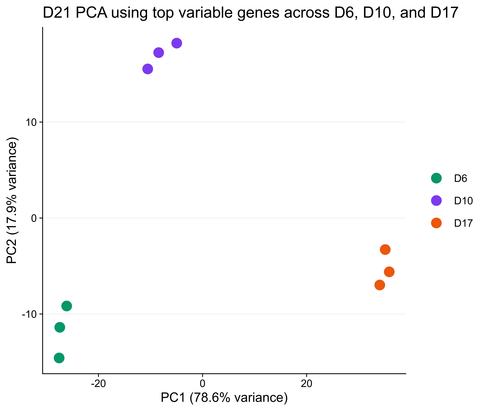
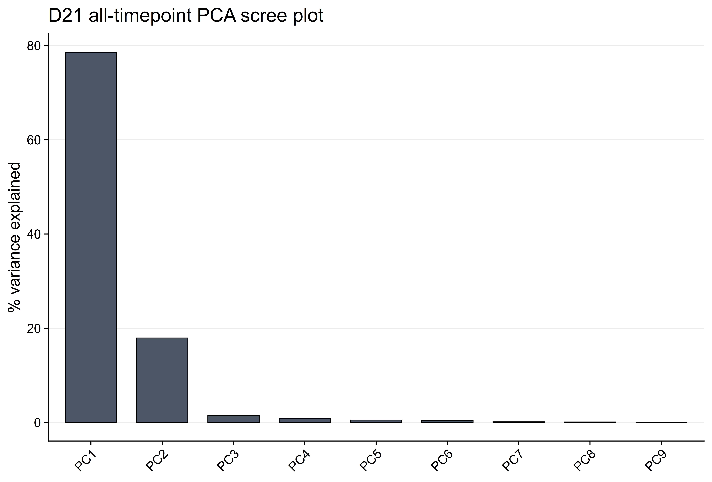
6 D21 PCA Using Union of Adjacent-Interval Genes
This PCA uses a union feature set from two adjacent D21 comparisons. The first set is the top 1000 most variable genes across D21 D6 and D10 samples. The second set is the top 1000 most variable genes across D21 D10 and D17 samples. The union is then used to train one D21 PCA across D6, D10, and D17.
d6_d10_gene_table <- select_top_variable_genes(
vst_matrix = vst_matrix,
sample_metadata = metadata,
timepoints = base::c(6, 10),
genotype = 'D21',
requested_gene_count = pca_gene_count)
d10_d17_gene_table <- select_top_variable_genes(
vst_matrix = vst_matrix,
sample_metadata = metadata,
timepoints = base::c(10, 17),
genotype = 'D21',
requested_gene_count = pca_gene_count)
union_interval_genes <- base::union(
d6_d10_gene_table$gene_id,
d10_d17_gene_table$gene_id)
union_interval_pca <- build_d21_pca(
vst_matrix = vst_matrix,
sample_metadata = metadata,
gene_ids = union_interval_genes,
training_timepoints = base::c(6, 10, 17))
base::data.frame(
d6_d10_genes = base::length(d6_d10_gene_table$gene_id),
d10_d17_genes = base::length(d10_d17_gene_table$gene_id),
union_genes = base::length(union_interval_genes),
overlap_genes = base::length(base::intersect(d6_d10_gene_table$gene_id, d10_d17_gene_table$gene_id)),
stringsAsFactors = FALSE)## d6_d10_genes d10_d17_genes union_genes overlap_genes
## 1 1000 1000 1708 292plot_d21_pca(
pca_result = union_interval_pca,
plot_title = 'D21 PCA using union of adjacent-interval variable genes')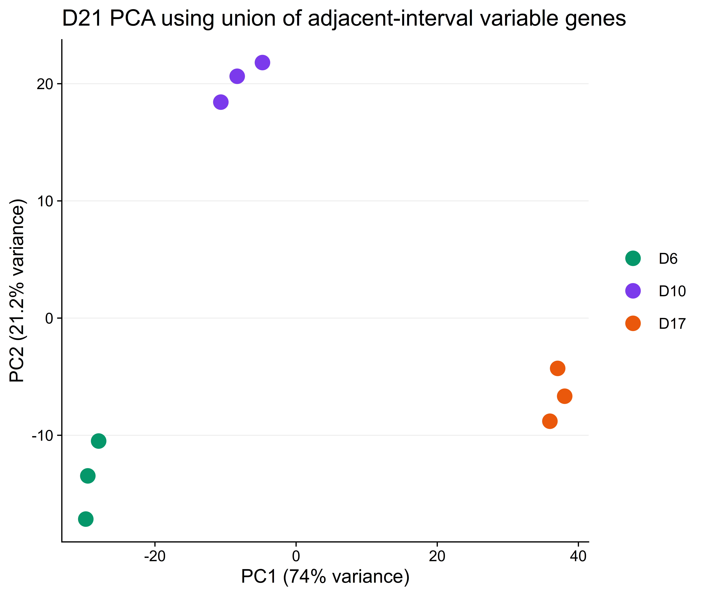
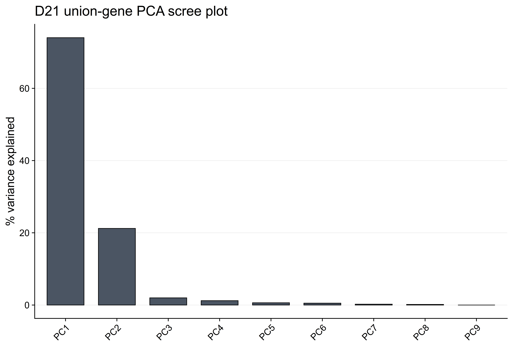
7 D21-Anchored Interval Scores
Each interval score is computed in its own D21-trained PCA space. The feature set is selected from the D21 samples in that interval only, the PCA is trained on those D21 samples, and both D21 and T21 samples from the same two timepoints are projected into that fixed PCA. The maturation coordinate is the projection of each sample onto the D21 start-to-end centroid vector using PC1, PC2, and PC3.
primary_results <- base::lapply(
base::seq_len(base::nrow(interval_specs)),
function(i) {
score_interval(
vst_matrix = vst_matrix,
sample_metadata = metadata,
interval_row = interval_specs[i, , drop = FALSE],
requested_gene_count = pca_gene_count,
n_score_pcs = n_scoring_pcs)
})
base::names(primary_results) <- interval_specs$interval
primary_scores <- base::do.call(
base::rbind,
base::lapply(primary_results, function(x) x$score_table))
base::rownames(primary_scores) <- NULL
primary_scores[
,
base::c(
'interval',
'sample_id',
'genotype_display',
'timepoint_label',
'rep',
'PC1',
'PC2',
'PC3',
'maturation_score'),
drop = FALSE
]## interval sample_id genotype_display timepoint_label rep PC1
## 1 D6-D10 BA1D6_S1 Di21 D6 1 -19.395447
## 2 D6-D10 BA2D6_S2 Di21 D6 2 -22.660954
## 3 D6-D10 BA3D6_S3 Di21 D6 3 -16.210953
## 4 D6-D10 BA1D10_S4 Di21 D10 1 19.512259
## 5 D6-D10 BA2D10_S5 Di21 D10 2 16.529418
## 6 D6-D10 BA3D10_S6 Di21 D10 3 22.225677
## 7 D6-D10 MA1D6_S10 Tri21 D6 1 -6.699528
## 8 D6-D10 MA2D6_S11 Tri21 D6 2 -4.643625
## 9 D6-D10 MA3D6_S12 Tri21 D6 3 -6.513005
## 10 D6-D10 MA1D10_S13 Tri21 D10 1 17.832154
## 11 D6-D10 MA2D10_S14 Tri21 D10 2 19.804395
## 12 D6-D10 MA3D10_S15 Tri21 D10 3 19.859517
## 13 D10-D17 BA1D10_S4 Di21 D10 1 -25.943260
## 14 D10-D17 BA2D10_S5 Di21 D10 2 -26.623408
## 15 D10-D17 BA3D10_S6 Di21 D10 3 -23.608635
## 16 D10-D17 BA1D17_S7 Di21 D17 1 26.184340
## 17 D10-D17 BA2D17_S8 Di21 D17 2 24.335315
## 18 D10-D17 BA3D17_S9 Di21 D17 3 25.655647
## 19 D10-D17 MA1D10_S13 Tri21 D10 1 -16.794360
## 20 D10-D17 MA2D10_S14 Tri21 D10 2 -13.821975
## 21 D10-D17 MA3D10_S15 Tri21 D10 3 -15.482908
## 22 D10-D17 MA1D17_S16 Tri21 D17 1 21.400076
## 23 D10-D17 MA2D17_S17 Tri21 D17 2 21.470212
## 24 D10-D17 MA3D17_S18 Tri21 D17 3 24.424636
## PC2 PC3 maturation_score
## 1 0.007746756 1.1736406 0.00047786
## 2 -0.810736669 -4.4415162 -0.08202921
## 3 0.072403653 3.9920903 0.08155135
## 4 -1.003376784 1.0033008 1.00151075
## 5 6.321418427 -0.9916006 0.92774788
## 6 -4.587455383 -0.7359150 1.07074138
## 7 -0.295523718 3.7043751 0.32630482
## 8 -1.497882370 2.6869371 0.37915172
## 9 -1.004209534 3.9075999 0.33081135
## 10 -3.601856991 -2.0450170 0.95840918
## 11 -1.885196046 -0.5841049 1.00925219
## 12 -6.306283745 -0.8025899 1.00931405
## 13 0.134300588 0.8770819 0.98907248
## 14 0.681934653 -4.4152013 0.97609208
## 15 -0.576614233 3.8642945 1.03483544
## 16 3.032980496 5.2715228 2.01496000
## 17 -9.520831112 -1.5288526 1.97990205
## 18 6.248229607 -4.0688453 2.00513795
## 19 3.067602957 4.2619198 1.16875516
## 20 4.343613667 -1.6838655 1.22770627
## 21 3.574712183 5.4883656 1.19444397
## 22 5.528874974 5.5625945 1.92057455
## 23 4.583706289 3.0576373 1.92222534
## 24 7.247148168 3.2669624 1.980217887.1 Interval PCA Views
These PCA plots show the fixed PCA spaces used for scoring. Axis labels include the variance explained by PC1 and PC2 for each interval-specific PCA.
plot_interval_pca <- function(interval_name) {
interval_scores <- primary_scores[primary_scores$interval == interval_name, , drop = FALSE]
variance_explained <- primary_results[[interval_name]]$variance_explained
ggplot2::ggplot(
interval_scores,
ggplot2::aes(PC1, PC2, color = timepoint_label, shape = genotype_display)) +
ggplot2::geom_point(size = 2.6, stroke = 0.8) +
ggplot2::scale_color_manual(values = timepoint_colors) +
ggplot2::scale_shape_manual(values = base::c(Di21 = 16, Tri21 = 17)) +
ggplot2::labs(
x = format_pc_axis_label('PC1', variance_explained),
y = format_pc_axis_label('PC2', variance_explained),
title = base::paste0(interval_name, ' D21-trained PCA space')) +
theme_ab01(base_size = 10)
}
interval_pca_scores <- primary_scores
interval_pca_scores$interval <- base::factor(
interval_pca_scores$interval,
levels = base::levels(interval_specs$interval))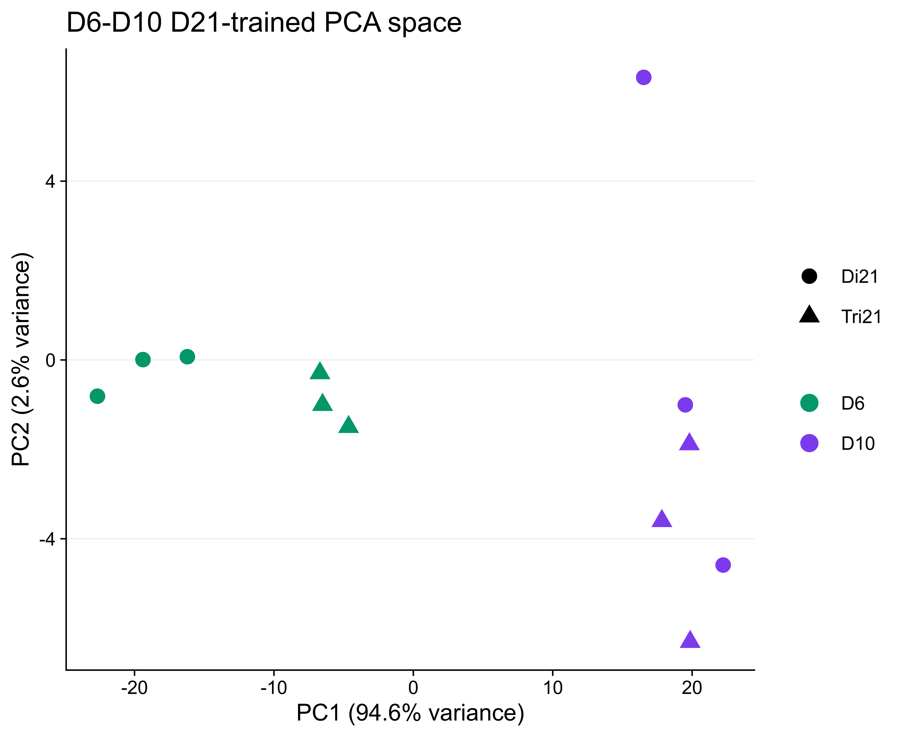
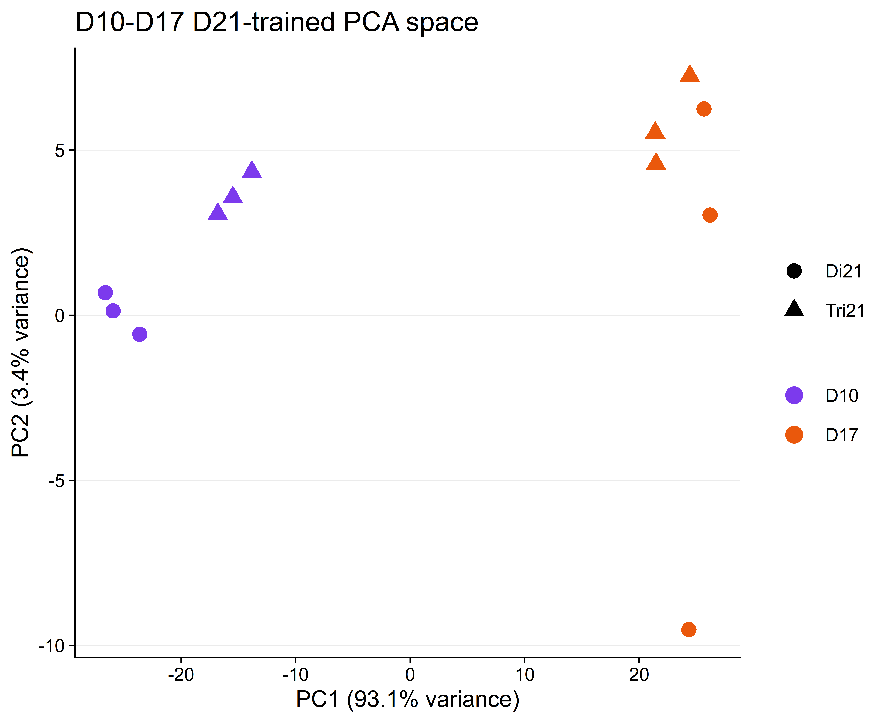
7.2 Individual-Day Score Plots
The bars show mean maturation score for each genotype at each interval timepoint, with individual replicates overlaid. Within a timepoint, Di21 and Tri21 bars are paired directly beside each other; gaps separate the two days in the interval.
score_mean <- stats::aggregate(
maturation_score ~ interval + genotype_display + timepoint_label + timepoint_numeric,
data = primary_scores,
FUN = base::mean)
score_points <- primary_scores
score_mean$timepoint_index <- NA_integer_
score_points$timepoint_index <- NA_integer_
for (interval_name in base::levels(interval_specs$interval)) {
interval_timepoints <- base::sort(base::unique(score_mean$timepoint_numeric[score_mean$interval == interval_name]))
score_mean$timepoint_index[score_mean$interval == interval_name] <- base::match(
score_mean$timepoint_numeric[score_mean$interval == interval_name],
interval_timepoints)
score_points$timepoint_index[score_points$interval == interval_name] <- base::match(
score_points$timepoint_numeric[score_points$interval == interval_name],
interval_timepoints)
}
score_mean$plot_x <- base::ifelse(
score_mean$genotype_display == 'Di21',
score_mean$timepoint_index - 0.18,
score_mean$timepoint_index + 0.18)
score_points$plot_x <- base::ifelse(
score_points$genotype_display == 'Di21',
score_points$timepoint_index - 0.18,
score_points$timepoint_index + 0.18)
score_mean[
base::order(score_mean$interval, score_mean$timepoint_numeric, score_mean$genotype_display),
,
drop = FALSE
]## interval genotype_display timepoint_label timepoint_numeric maturation_score
## 1 D6-D10 Di21 D6 6 -5.730460e-18
## 2 D6-D10 Tri21 D6 6 3.454226e-01
## 3 D6-D10 Di21 D10 10 1.000000e+00
## 5 D6-D10 Tri21 D10 10 9.923251e-01
## 4 D10-D17 Di21 D10 10 1.000000e+00
## 6 D10-D17 Tri21 D10 10 1.196968e+00
## 7 D10-D17 Di21 D17 17 2.000000e+00
## 8 D10-D17 Tri21 D17 17 1.941006e+00
## timepoint_index plot_x
## 1 1 0.82
## 2 1 1.18
## 3 2 1.82
## 5 2 2.18
## 4 1 0.82
## 6 1 1.18
## 7 2 1.82
## 8 2 2.18d6_d10_score_mean <- score_mean[score_mean$interval == 'D6-D10', , drop = FALSE]
d6_d10_score_points <- score_points[score_points$interval == 'D6-D10', , drop = FALSE]
ggplot2::ggplot(
d6_d10_score_mean,
ggplot2::aes(plot_x, maturation_score, fill = genotype_display)) +
ggplot2::geom_hline(
yintercept = base::c(0, 1),
linetype = 'dashed',
color = 'grey45',
linewidth = 0.25) +
ggplot2::geom_col(
width = 0.36,
color = 'black',
linewidth = 0.25,
alpha = 0.9) +
ggplot2::geom_point(
data = d6_d10_score_points,
ggplot2::aes(plot_x, maturation_score, fill = genotype_display),
inherit.aes = FALSE,
size = 1.9,
shape = 21,
color = 'black',
stroke = 0.25,
position = ggplot2::position_jitter(width = 0.04, height = 0, seed = 42)) +
ggplot2::scale_x_continuous(
breaks = base::sort(base::unique(d6_d10_score_mean$timepoint_index)),
labels = base::paste0('D', base::sort(base::unique(d6_d10_score_mean$timepoint_numeric))),
expand = ggplot2::expansion(mult = c(0.12, 0.12))) +
ggplot2::scale_fill_manual(values = genotype_colors) +
ggplot2::labs(
x = NULL,
y = 'Maturation score',
title = 'D6-D10 score anchored to Di21 centroids') +
theme_ab01(base_size = 10)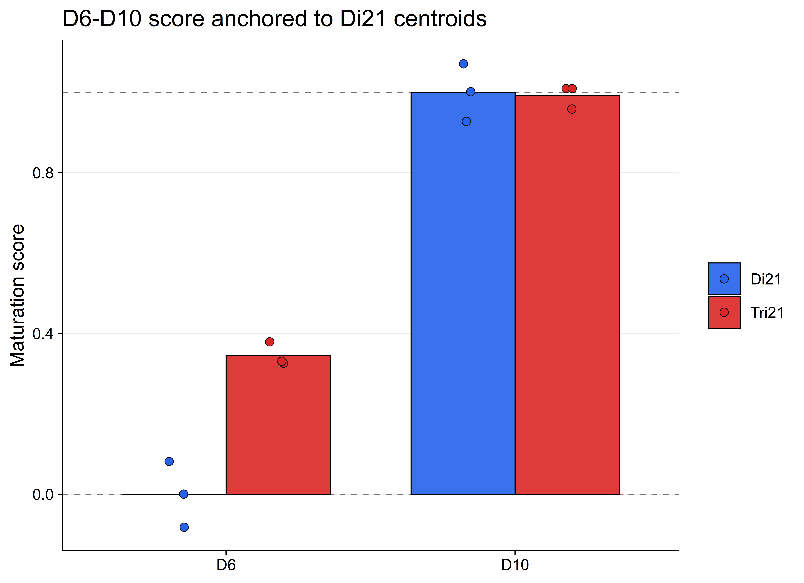
d10_d17_score_mean <- score_mean[score_mean$interval == 'D10-D17', , drop = FALSE]
d10_d17_score_points <- score_points[score_points$interval == 'D10-D17', , drop = FALSE]
ggplot2::ggplot(
d10_d17_score_mean,
ggplot2::aes(plot_x, maturation_score, fill = genotype_display)) +
ggplot2::geom_hline(
yintercept = base::c(1, 2),
linetype = 'dashed',
color = 'grey45',
linewidth = 0.25) +
ggplot2::geom_col(
width = 0.36,
color = 'black',
linewidth = 0.25,
alpha = 0.9) +
ggplot2::geom_point(
data = d10_d17_score_points,
ggplot2::aes(plot_x, maturation_score, fill = genotype_display),
inherit.aes = FALSE,
size = 1.9,
shape = 21,
color = 'black',
stroke = 0.25,
position = ggplot2::position_jitter(width = 0.04, height = 0, seed = 42)) +
ggplot2::scale_x_continuous(
breaks = base::sort(base::unique(d10_d17_score_mean$timepoint_index)),
labels = base::paste0('D', base::sort(base::unique(d10_d17_score_mean$timepoint_numeric))),
expand = ggplot2::expansion(mult = c(0.12, 0.12))) +
ggplot2::scale_fill_manual(values = genotype_colors) +
ggplot2::labs(
x = NULL,
y = 'Maturation score',
title = 'D10-D17 score anchored to Di21 centroids') +
theme_ab01(base_size = 10)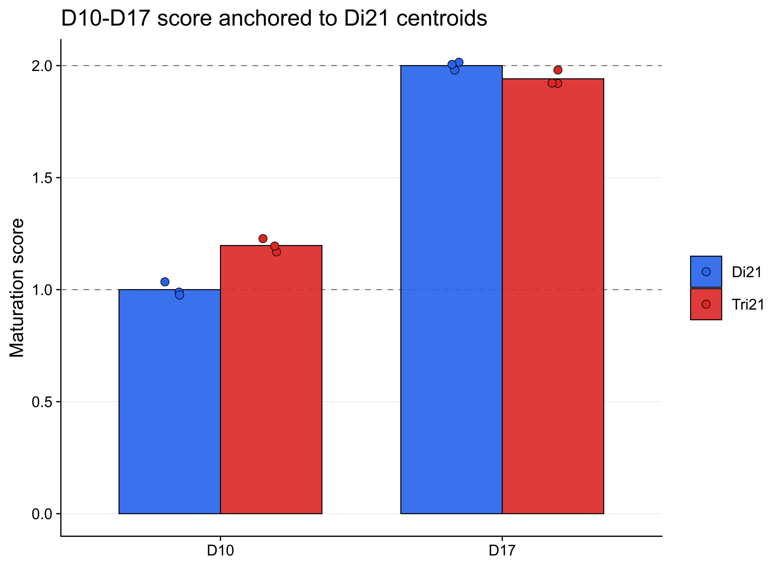
8 Sensitivity of Scores to Gene-List Size
The sensitivity analysis repeats the same D21-anchored scoring workflow across a range of input gene-list sizes. Each run reselects the most variable D21 genes for the relevant interval, retrains the interval PCA, and recomputes scores from PC1, PC2, and PC3. This checks whether the genotype and timepoint score patterns depend strongly on choosing exactly 1000 genes.
sensitivity_results <- base::list()
result_idx <- 1L
for (interval_idx in base::seq_len(base::nrow(interval_specs))) {
for (gene_count in sensitivity_gene_counts) {
sensitivity_results[[result_idx]] <- score_interval(
vst_matrix = vst_matrix,
sample_metadata = metadata,
interval_row = interval_specs[interval_idx, , drop = FALSE],
requested_gene_count = gene_count,
n_score_pcs = n_scoring_pcs)
result_idx <- result_idx + 1L
}
}
sensitivity_scores <- base::do.call(
base::rbind,
base::lapply(sensitivity_results, function(x) x$score_table))
base::rownames(sensitivity_scores) <- NULL
sensitivity_summary <- stats::aggregate(
maturation_score ~ interval + requested_gene_count + effective_gene_count +
genotype_display + timepoint_numeric + timepoint_label,
data = sensitivity_scores,
FUN = base::mean)
sensitivity_summary <- sensitivity_summary[
base::order(
sensitivity_summary$interval,
sensitivity_summary$requested_gene_count,
sensitivity_summary$timepoint_numeric,
sensitivity_summary$genotype_display),
,
drop = FALSE]
utils::head(sensitivity_summary, 12)## interval requested_gene_count effective_gene_count genotype_display
## 1 D6-D10 100 100 Di21
## 140 D6-D10 100 100 Tri21
## 279 D6-D10 100 100 Di21
## 557 D6-D10 100 100 Tri21
## 2 D6-D10 200 200 Di21
## 141 D6-D10 200 200 Tri21
## 281 D6-D10 200 200 Di21
## 559 D6-D10 200 200 Tri21
## 3 D6-D10 300 300 Di21
## 142 D6-D10 300 300 Tri21
## 283 D6-D10 300 300 Di21
## 561 D6-D10 300 300 Tri21
## timepoint_numeric timepoint_label maturation_score
## 1 6 D6 -1.154224e-18
## 140 6 D6 3.053060e-01
## 279 10 D10 1.000000e+00
## 557 10 D10 9.656967e-01
## 2 6 D6 4.049947e-18
## 141 6 D6 3.279195e-01
## 281 10 D10 1.000000e+00
## 559 10 D10 9.692237e-01
## 3 6 D6 2.313191e-17
## 142 6 D6 3.297181e-01
## 283 10 D10 1.000000e+00
## 561 10 D10 9.700006e-018.1 Mean Score Across Gene Counts
This plot shows the mean score for each genotype and timepoint as the number of selected D21-variable genes increases. Stable lines indicate that the score is not highly sensitive to one exact gene-count cutoff.
sensitivity_summary$label_group <- base::factor(
base::paste(sensitivity_summary$genotype_display, sensitivity_summary$timepoint_label),
levels = base::c(
'Di21 D6',
'Tri21 D6',
'Di21 D10',
'Tri21 D10',
'Di21 D17',
'Tri21 D17'))
ggplot2::ggplot(
sensitivity_summary,
ggplot2::aes(
effective_gene_count,
maturation_score,
color = genotype_display,
linetype = timepoint_label,
group = label_group)) +
ggplot2::geom_hline(
yintercept = base::c(0, 1, 2),
linetype = 'dashed',
color = 'grey45',
linewidth = 0.25) +
ggplot2::geom_line(linewidth = 0.62) +
ggplot2::geom_point(size = 0.9) +
ggplot2::facet_wrap(~interval, scales = 'free_y') +
ggplot2::scale_x_continuous(breaks = sensitivity_x_breaks) +
ggplot2::scale_color_manual(values = genotype_colors) +
ggplot2::labs(
x = 'Effective number of input genes',
y = 'Mean maturation score',
title = 'Sensitivity of genotype-timepoint mean scores to gene-list size') +
theme_ab01(base_size = 10) +
ggplot2::theme(axis.text.x = ggplot2::element_text(angle = 45, hjust = 1))
8.2 Tri21 Displacement From Matched Di21
This plot subtracts the matched Di21 mean score from the Tri21 mean score at the same interval, gene count, and timepoint. It is a compact way to inspect whether Tri21 samples score earlier or later than their Di21 timepoint anchor.
d21_reference <- sensitivity_summary[
sensitivity_summary$genotype_display == 'Di21',
base::c(
'interval',
'requested_gene_count',
'effective_gene_count',
'timepoint_numeric',
'maturation_score'),
drop = FALSE]
base::names(d21_reference)[base::names(d21_reference) == 'maturation_score'] <- 'd21_mean_score'
tri21_displacement <- base::merge(
sensitivity_summary[sensitivity_summary$genotype_display == 'Tri21', , drop = FALSE],
d21_reference,
by = base::c(
'interval',
'requested_gene_count',
'effective_gene_count',
'timepoint_numeric'),
sort = FALSE)
tri21_displacement$tri21_minus_di21 <- tri21_displacement$maturation_score -
tri21_displacement$d21_mean_score
tri21_displacement$timepoint_label <- base::factor(
tri21_displacement$timepoint_label,
levels = timepoint_levels)
ggplot2::ggplot(
tri21_displacement,
ggplot2::aes(
effective_gene_count,
tri21_minus_di21,
color = timepoint_label,
group = timepoint_label)) +
ggplot2::geom_hline(yintercept = 0, linetype = 'dashed', linewidth = 0.3) +
ggplot2::geom_line(linewidth = 0.65) +
ggplot2::geom_point(size = 0.9) +
ggplot2::facet_wrap(~interval, scales = 'free_y') +
ggplot2::scale_x_continuous(breaks = sensitivity_x_breaks) +
ggplot2::scale_color_manual(values = timepoint_colors) +
ggplot2::labs(
x = 'Effective number of input genes',
y = 'Tri21 mean score minus matched Di21 mean score',
title = 'Sensitivity of Tri21 displacement from matched Di21') +
theme_ab01(base_size = 10) +
ggplot2::theme(axis.text.x = ggplot2::element_text(angle = 45, hjust = 1))
8.3 Convergence Toward the Maximum-Gene Score
This plot compares each gene-count score with the score obtained when all filtered VST genes are allowed into the interval-specific feature ranking. Lower values indicate closer agreement with the maximum-gene score for the same interval, genotype, and timepoint.
max_gene_count <- base::max(sensitivity_summary$effective_gene_count)
max_gene_reference <- sensitivity_summary[
sensitivity_summary$effective_gene_count == max_gene_count,
base::c(
'interval',
'genotype_display',
'timepoint_numeric',
'maturation_score'),
drop = FALSE]
base::names(max_gene_reference)[
base::names(max_gene_reference) == 'maturation_score'
] <- 'max_gene_maturation_score'
score_convergence <- base::merge(
sensitivity_summary,
max_gene_reference,
by = base::c('interval', 'genotype_display', 'timepoint_numeric'),
sort = FALSE)
score_convergence$absolute_difference_from_max_gene_score <- base::abs(
score_convergence$maturation_score -
score_convergence$max_gene_maturation_score)
score_convergence$label_group <- base::factor(
base::paste(score_convergence$genotype_display, score_convergence$timepoint_label),
levels = base::c(
'Di21 D6',
'Tri21 D6',
'Di21 D10',
'Tri21 D10',
'Di21 D17',
'Tri21 D17'))
ggplot2::ggplot(
score_convergence,
ggplot2::aes(
effective_gene_count,
absolute_difference_from_max_gene_score,
color = genotype_display,
linetype = timepoint_label,
group = label_group)) +
ggplot2::geom_hline(yintercept = 0, linetype = 'dashed', linewidth = 0.3) +
ggplot2::geom_line(linewidth = 0.62) +
ggplot2::geom_point(size = 0.9) +
ggplot2::facet_wrap(~interval, scales = 'free_y') +
ggplot2::scale_x_continuous(breaks = sensitivity_x_breaks) +
ggplot2::scale_color_manual(values = genotype_colors) +
ggplot2::labs(
x = 'Effective number of input genes',
y = 'Absolute difference from maximum-gene mean score',
title = 'Convergence of interval scores as more genes enter the PCA') +
theme_ab01(base_size = 10) +
ggplot2::theme(axis.text.x = ggplot2::element_text(angle = 45, hjust = 1))
9 Summary
The summary table reports mean scores by interval, genotype, and timepoint. D21 means define the anchors by construction; the T21 values show where Tri21 samples fall in the same D21-trained PCA coordinate system.
primary_mean_summary <- stats::aggregate(
maturation_score ~ interval + genotype_display + timepoint_label,
data = primary_scores,
FUN = base::mean)
primary_mean_summary <- primary_mean_summary[
base::order(
primary_mean_summary$interval,
primary_mean_summary$timepoint_label,
primary_mean_summary$genotype_display),
,
drop = FALSE]
primary_mean_summary## interval genotype_display timepoint_label maturation_score
## 1 D6-D10 Di21 D6 -5.730460e-18
## 2 D6-D10 Tri21 D6 3.454226e-01
## 3 D6-D10 Di21 D10 1.000000e+00
## 5 D6-D10 Tri21 D10 9.923251e-01
## 4 D10-D17 Di21 D10 1.000000e+00
## 6 D10-D17 Tri21 D10 1.196968e+00
## 7 D10-D17 Di21 D17 2.000000e+00
## 8 D10-D17 Tri21 D17 1.941006e+0010 ZRN01 Mesenchyme PCA Checks
These final PCA checks use the copied ZRN01 objects stored under data_DSHC1/.
Respiratory mesenchyme and esophageal mesenchyme are analyzed separately. For
each lineage, genes are ranked by VST variance across that lineage’s samples
only, the top 1000 genes are used for PCA, and the scree plot reports PC1-PC15.
ZRN01_metadata <- base::readRDS('data_DSHC1/ZRN01/metadata/ZRN01_metadata.rds')
ZRN01_vst <- base::readRDS('data_DSHC1/ZRN01/counts/ZRN01_vst.rds')
base::stopifnot(!base::anyDuplicated(ZRN01_metadata$sampleid))
base::stopifnot(base::all(ZRN01_metadata$sampleid %in% base::colnames(ZRN01_vst)))
ZRN01_metadata <- ZRN01_metadata[
base::match(base::colnames(ZRN01_vst), ZRN01_metadata$sampleid),
,
drop = FALSE]
base::stopifnot(base::identical(
base::as.character(ZRN01_metadata$sampleid),
base::colnames(ZRN01_vst)))
ZRN01_metadata$timepoint_label <- base::factor(
base::as.character(ZRN01_metadata$timepoint),
levels = base::paste0('D', base::sort(base::unique(ZRN01_metadata$timepoint_numeric))))
ZRN01_metadata$genotype_display <- base::factor(
base::as.character(ZRN01_metadata$genotype),
levels = base::c('Di21', 'Tri21'))
base::data.frame(
samples = base::nrow(ZRN01_metadata),
lineages = base::paste(base::levels(ZRN01_metadata$lineage), collapse = ', '),
genotypes = base::paste(base::levels(ZRN01_metadata$genotype), collapse = ', '),
timepoints = base::paste(base::levels(ZRN01_metadata$timepoint_label), collapse = ', '),
stringsAsFactors = FALSE)## samples lineages genotypes timepoints
## 1 41 SM, EM, RM Di21, Tri21 D4, D7, D10, D15build_zrn01_lineage_pca <- function(vst_matrix, sample_metadata, lineage_name,
requested_gene_count = pca_gene_count) {
lineage_ids <- base::as.character(sample_metadata$sampleid[sample_metadata$lineage == lineage_name])
gene_variance <- base::apply(vst_matrix[, lineage_ids, drop = FALSE], 1, stats::var)
ranked_genes <- base::names(base::sort(gene_variance, decreasing = TRUE))
effective_gene_count <- base::min(requested_gene_count, base::length(ranked_genes))
gene_ids <- ranked_genes[base::seq_len(effective_gene_count)]
pca_fit <- stats::prcomp(
base::t(vst_matrix[gene_ids, lineage_ids, drop = FALSE]),
center = TRUE,
scale. = FALSE)
coords <- base::as.data.frame(pca_fit$x)
coords$sampleid <- base::rownames(coords)
coords <- base::merge(
sample_metadata,
coords,
by = 'sampleid',
sort = FALSE)
coords <- coords[base::match(lineage_ids, coords$sampleid), , drop = FALSE]
base::list(
pca_fit = pca_fit,
coords = coords,
gene_count = effective_gene_count,
variance_explained = calculate_variance_explained(pca_fit))
}
plot_zrn01_pca <- function(pca_result, plot_title) {
ggplot2::ggplot(
pca_result$coords,
ggplot2::aes(PC1, PC2, color = timepoint_label, shape = genotype_display)) +
ggplot2::geom_point(size = 2.7, stroke = 0.8) +
ggplot2::scale_color_manual(values = timepoint_colors) +
ggplot2::scale_shape_manual(values = base::c(Di21 = 16, Tri21 = 17)) +
ggplot2::labs(
x = format_pc_axis_label('PC1', pca_result$variance_explained),
y = format_pc_axis_label('PC2', pca_result$variance_explained),
title = plot_title) +
theme_ab01(base_size = 10)
}10.1 ZRN01 Respiratory Mesenchyme
zrn01_rm_pca <- build_zrn01_lineage_pca(
vst_matrix = ZRN01_vst,
sample_metadata = ZRN01_metadata,
lineage_name = 'RM',
requested_gene_count = pca_gene_count)
base::data.frame(
lineage = 'RM',
effective_gene_count = zrn01_rm_pca$gene_count,
samples = base::nrow(zrn01_rm_pca$coords),
stringsAsFactors = FALSE)## lineage effective_gene_count samples
## 1 RM 1000 18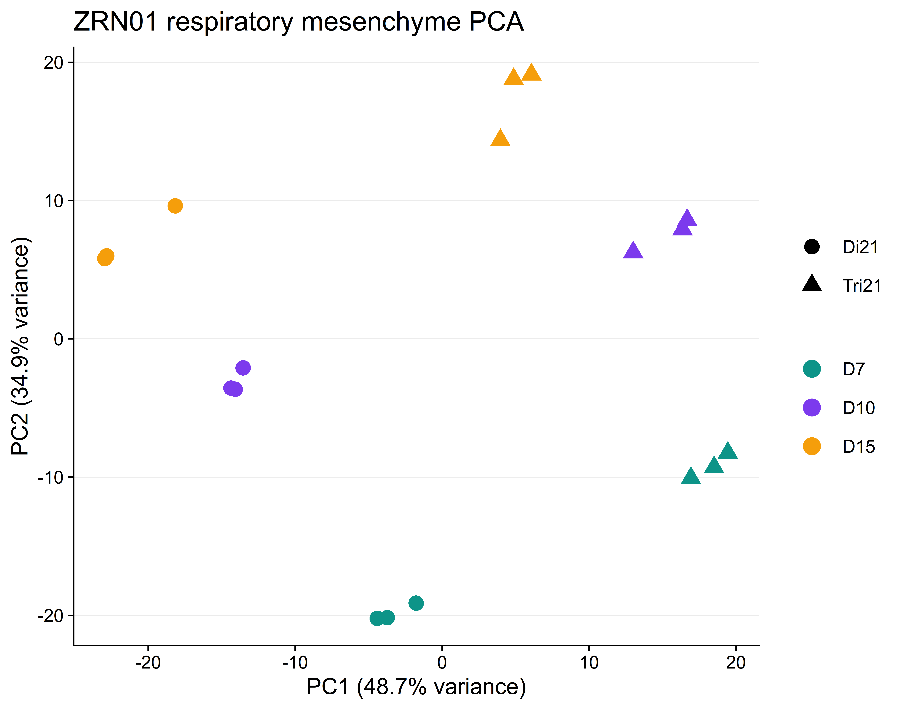
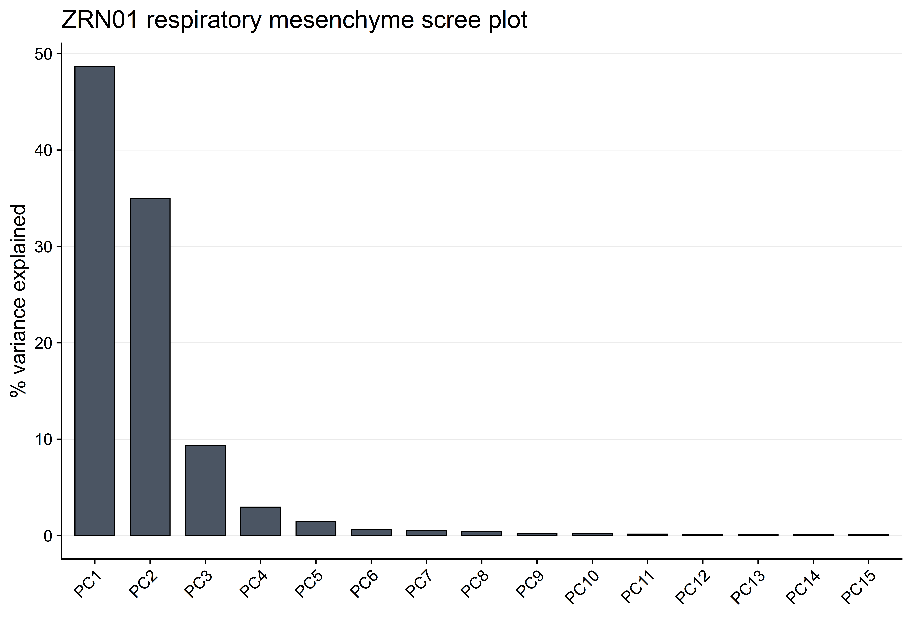
10.2 ZRN01 Esophageal Mesenchyme
zrn01_em_pca <- build_zrn01_lineage_pca(
vst_matrix = ZRN01_vst,
sample_metadata = ZRN01_metadata,
lineage_name = 'EM',
requested_gene_count = pca_gene_count)
base::data.frame(
lineage = 'EM',
effective_gene_count = zrn01_em_pca$gene_count,
samples = base::nrow(zrn01_em_pca$coords),
stringsAsFactors = FALSE)## lineage effective_gene_count samples
## 1 EM 1000 18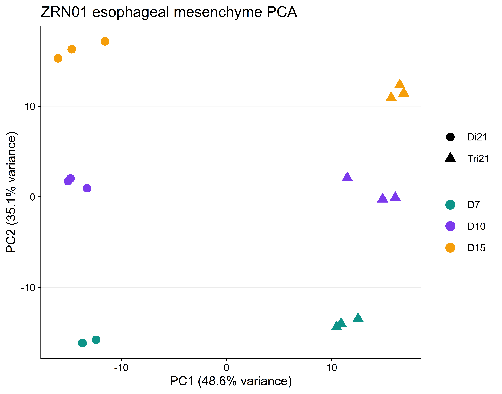
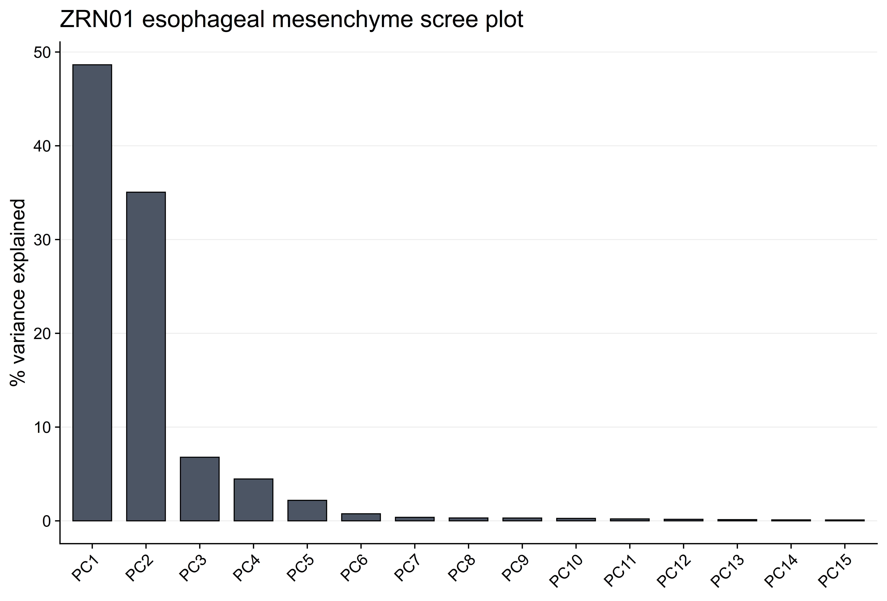